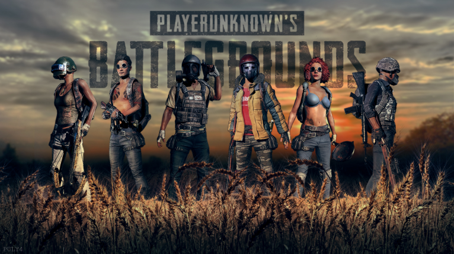

PLAYERUNKNOWN'S BATTLEGROUNDS, 약칭 배틀그라운드는 크래프톤의 자회사인 펍지 주식회사의 MMO 슈팅 게임이다.
게임플레이 형식은 브렌던 그린(Brendan Greene, 닉네임 PLAYERUNKNOWN)이 이전에 제작했던 ARMA 3의 모드 'PLAYERUNKNOWN'S Battle Royale'에 기반하여,
일개 게임의 모드에 그치지 않고 스탠드얼론으로 제작된 작품이다.
최대 100명의 인원이 무기와 탈것을 활용해 벌이는 배틀로얄 게임으로, 방대한 오픈 월드 맵에서 물품을 얻고 다양한 전략을 이용해 싸우면서 최후의 1인 혹은 1팀을 가려내는 방식이라고 할 수 있다.
스팀을 통해 전세계 동시 출시를 하였으며, 300만명이 넘는 스팀역사상 최다 동접자기록을 세우면서 본격적인 배틀로얄 게임 시대를 열었다는 평가를 받고 있다.
비록 왕좌를 포트나이트에 넘겨주긴 했지만 이후 스팀에서 수많은 배틀로얄 게임들이 등장했으며, 콜 오브 듀티 등 메이저 게임에도 배틀로얄 모드를 도입시키는 등 게임계에 상당한 파장을 불러일으켰다는 데에 의의가 있다.
국내시장도 예외가 아니라서 100주넘게 PC방을 점령했던 LoL을 한동안 밀어냈고, 2017년 대한민국 게임대상을 차지했다!
경쟁작으로는 1년 전에 출시한 H1Z1와 17년 9월 27일에 나온 포트나이트 배틀로얄 모드가 있다.
본 문서에는 스팀/카카오/(드물지만)PS 및 XBOX 플랫폼 각각의 상황 및 기준점 등이 뒤섞여 있으므로, 열람시 주의가 필요하다.